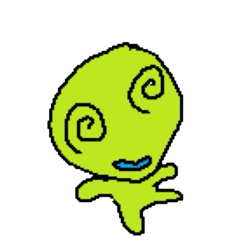

¡Hello world!★
Me llamo Pía Canales y pueden encontrarme como piacanalesr en Github
Soy estudiante de cuarto año de Diseño UC. Mi dato freak es que estuve ciega de un ojo por un día ( ˶°ㅁ°) !!
Esta es mi primera prueba de Introducción al Desarrollo Web desde el Diseño, un Optativo de Profundización de la Escuela de Diseño UC.
Aquí puedes echarle un vistazo a las páginas que preparé usando HTML, CSS y p5.js, una bibliteca de JavaScript:
En la segunda página interior puedes ver cómo adapto un ejemplo de p5.js a página completa. El ejemplo se llama "Drawing Lines"